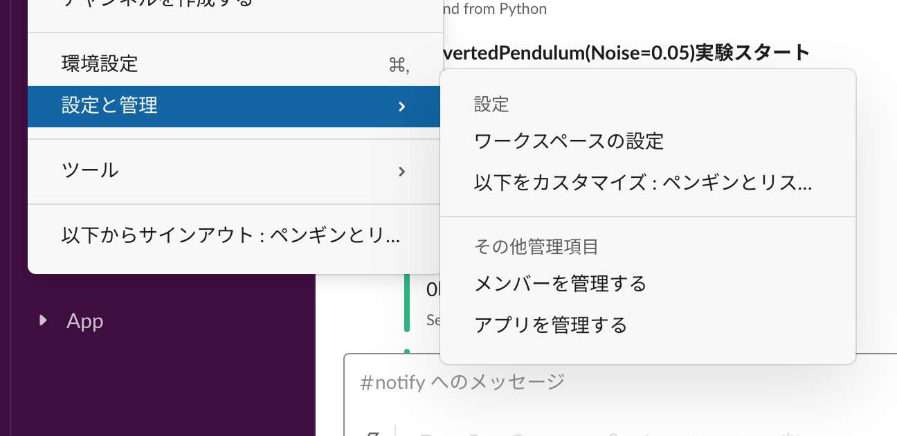
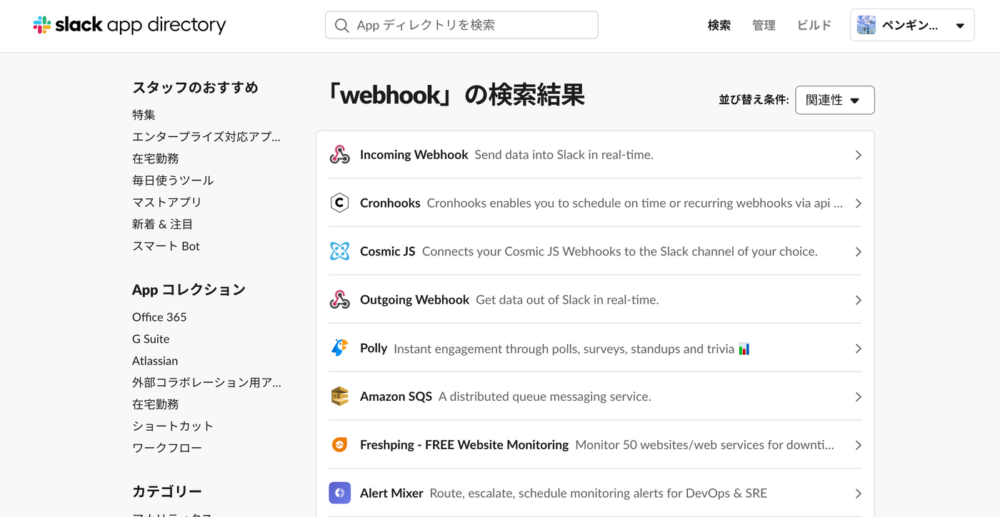
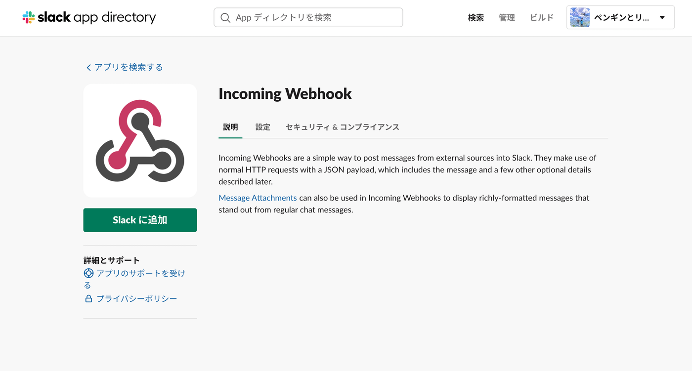
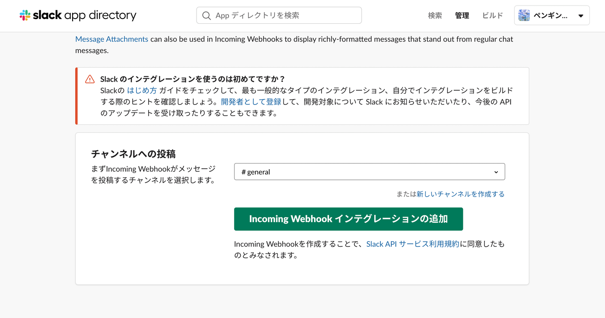
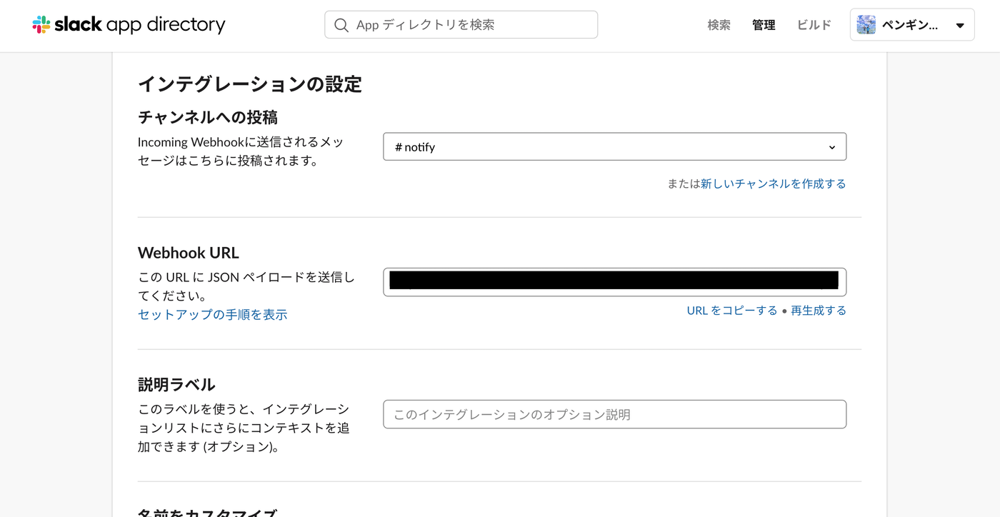
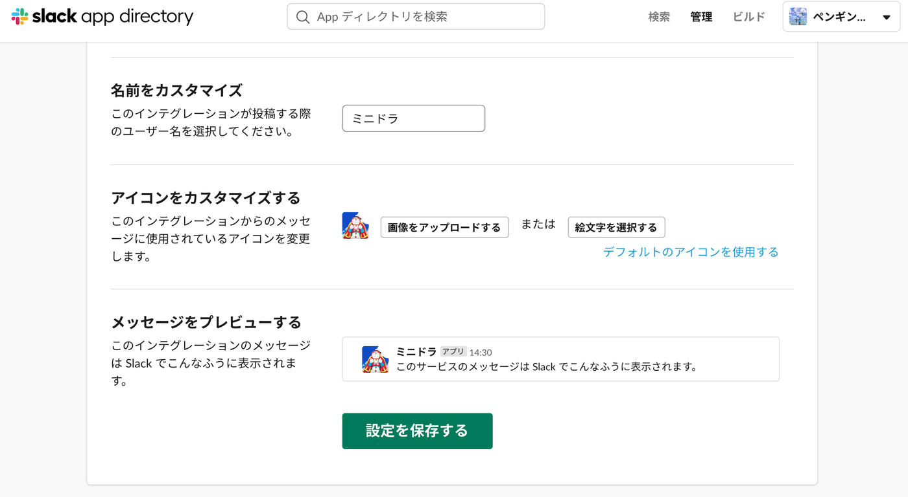
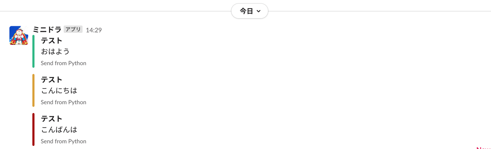
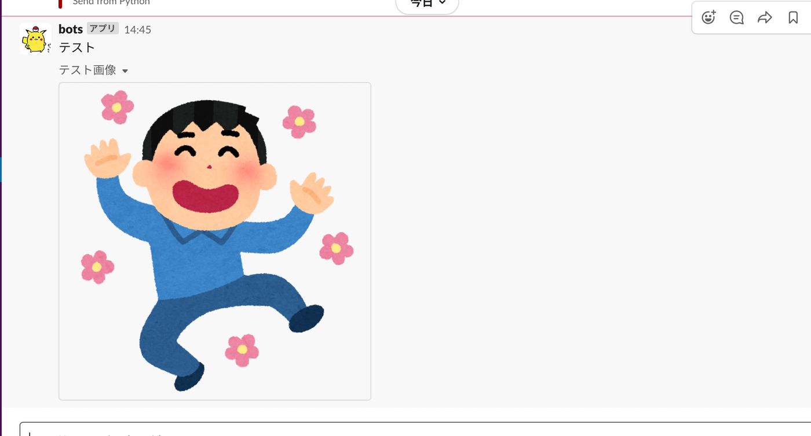
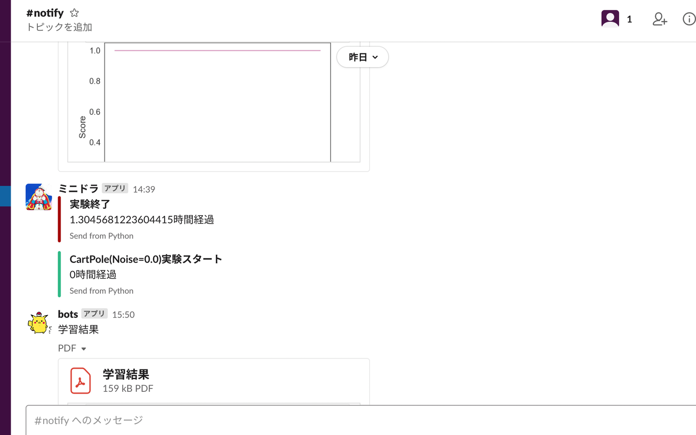

<!DOCTYPE html>
<html lang="en" itemscope itemtype="http://schema.org/WebPage">
  <head>
    

  <meta charset="utf-8" />
  <meta http-equiv="X-UA-Compatible" content="IE=edge">
  <meta name="viewport" content="width=device-width, initial-scale=1.0, maximum-scale=1.0">

  <title>Pythonでslackに実験結果(テキストと画像)を送る - yuhi-sa</title>
  <meta name="author" content="yuhi-sa"/><script type="application/ld+json">
{
    "@context": "http://schema.org",
    "@type": "WebSite",
    "name": "yuhi-sa",
    
    "url": "https:\/\/yuhi-sa.github.io\/"
}
</script><script type="application/ld+json">
{
  "@context": "http://schema.org",
  "@type": "Organization",
  "name": "",
  "url": "https:\/\/yuhi-sa.github.io\/"
  
  
  
  
}
</script>
<script type="application/ld+json">
{
  "@context": "http://schema.org",
  "@type": "BreadcrumbList",
  "itemListElement": [{
        "@type": "ListItem",
        "position": 1,
        "item": {
          "@id": "https:\/\/yuhi-sa.github.io\/",
          "name": "home"
        }
    },{
        "@type": "ListItem",
        "position": 3,
        "item": {
          "@id": "https:\/\/yuhi-sa.github.io\/posts\/20201223_slackapi\/1\/",
          "name": "Pythonでslackに実験結果(テキストと画像)を送る"
        }
    }]
}
</script><script type="application/ld+json">
{
  "@context": "http://schema.org",
  "@type": "Article",
  "author": {
    "name" : "yuhi-sa"
  },
  "headline": "Pythonでslackに実験結果(テキストと画像)を送る",
  "description" : "",
  "inLanguage" : "en",
  "wordCount":  93 ,
  "datePublished" : "2020-12-23T15:17:23",
  "dateModified" : "2020-12-23T15:17:23",
  "image" : "https:\/\/yuhi-sa.github.io\/",
  "keywords" : [ "python" ],
  "mainEntityOfPage" : "https:\/\/yuhi-sa.github.io\/posts\/20201223_slackapi\/1\/",
  "publisher" : {
    "@type": "Organization",
    "name" : "https:\/\/yuhi-sa.github.io\/",
    "logo" : {
        "@type" : "ImageObject",
        "url" : "https:\/\/yuhi-sa.github.io\/",
        "height" :  60 ,
        "width" :  60
    }
  }
}
</script>

<meta property="og:title" content="Pythonでslackに実験結果(テキストと画像)を送る" />
<meta property="og:url" content="https://yuhi-sa.github.io/posts/20201223_slackapi/1/" />
<meta property="og:type" content="website" />
<meta property="og:site_name" content="yuhi-sa" />

  <meta name="twitter:title" content="Pythonでslackに実験結果(テキストと画像)を送る" />
  <meta name="twitter:card" content="summary" />
  <link href='https://yuhi-sa.github.io/img/icon.JPG' rel='icon' type='image/x-icon'/>
  <meta name="generator" content="Hugo 0.86.1" />
  <link rel="alternate" href="https://yuhi-sa.github.io/index.xml" type="application/rss+xml" title="yuhi-sa"><link rel="stylesheet" href="https://cdnjs.cloudflare.com/ajax/libs/KaTeX/0.10.0/katex.min.css" integrity="sha384-9eLZqc9ds8eNjO3TmqPeYcDj8n+Qfa4nuSiGYa6DjLNcv9BtN69ZIulL9+8CqC9Y" crossorigin="anonymous">
  <link rel="stylesheet" href="https://use.fontawesome.com/releases/v5.5.0/css/all.css" integrity="sha384-B4dIYHKNBt8Bc12p+WXckhzcICo0wtJAoU8YZTY5qE0Id1GSseTk6S+L3BlXeVIU" crossorigin="anonymous">
  <link rel="stylesheet" href="https://maxcdn.bootstrapcdn.com/bootstrap/3.3.7/css/bootstrap.min.css" integrity="sha384-BVYiiSIFeK1dGmJRAkycuHAHRg32OmUcww7on3RYdg4Va+PmSTsz/K68vbdEjh4u" crossorigin="anonymous"><link rel="stylesheet" href="https://yuhi-sa.github.io/css/main.css" /><link rel="stylesheet" href="https://fonts.googleapis.com/css?family=Lora:400,700,400italic,700italic" />
  <link rel="stylesheet" href="https://fonts.googleapis.com/css?family=Open+Sans:300italic,400italic,600italic,700italic,800italic,400,300,600,700,800" />
  <link rel="stylesheet" href="https://yuhi-sa.github.io/css/highlight.min.css" /><link rel="stylesheet" href="https://yuhi-sa.github.io/css/codeblock.css" /><link rel="stylesheet" href="https://cdnjs.cloudflare.com/ajax/libs/photoswipe/4.1.2/photoswipe.min.css" integrity="sha384-h/L2W9KefUClHWaty3SLE5F/qvc4djlyR4qY3NUV5HGQBBW7stbcfff1+I/vmsHh" crossorigin="anonymous">
  <link rel="stylesheet" href="https://cdnjs.cloudflare.com/ajax/libs/photoswipe/4.1.2/default-skin/default-skin.min.css" integrity="sha384-iD0dNku6PYSIQLyfTOpB06F2KCZJAKLOThS5HRe8b3ibhdEQ6eKsFf/EeFxdOt5R" crossorigin="anonymous">


<script async src="https://www.googletagmanager.com/gtag/js?id=G-LN6QP6VVM3"></script>
<script>
   window.dataLayer = window.dataLayer || [];
   function gtag(){dataLayer.push(arguments);}
   gtag('js', new Date());
   gtag('config', 'G-LN6QP6VVM3');
</script>


<script data-ad-client="ca-pub-9558545098866170" async src="https://pagead2.googlesyndication.com/pagead/js/adsbygoogle.js"></script>


  </head>
  <body>
    <nav class="navbar navbar-default navbar-fixed-top navbar-custom">
  <div class="container-fluid">
    <div class="navbar-header">
      <button type="button" class="navbar-toggle" data-toggle="collapse" data-target="#main-navbar">
        <span class="sr-only">Toggle navigation</span>
        <span class="icon-bar"></span>
        <span class="icon-bar"></span>
        <span class="icon-bar"></span>
      </button>
      <a class="navbar-brand" href="https://yuhi-sa.github.io/">yuhi-sa</a>
    </div>

    <div class="collapse navbar-collapse" id="main-navbar">
      <ul class="nav navbar-nav navbar-right">
        
          
            <li>
              <a title="Blog" href="/">Blog</a>
            </li>
          
        
          
            <li>
              <a title="Tags" href="/tags">Tags</a>
            </li>
          
        
          
            <li>
              <a title="quotations" href="/posts/quotations">quotations</a>
            </li>
          
        
          
            <li>
              <a title="About" href="/posts/about">About</a>
            </li>
          
        

        

        
      </ul>
    </div>

    

  </div>
</nav>


    


<div class="pswp" tabindex="-1" role="dialog" aria-hidden="true">

<div class="pswp__bg"></div>

<div class="pswp__scroll-wrap">
    
    <div class="pswp__container">
      <div class="pswp__item"></div>
      <div class="pswp__item"></div>
      <div class="pswp__item"></div>
    </div>
    
    <div class="pswp__ui pswp__ui--hidden">
    <div class="pswp__top-bar">
      
      <div class="pswp__counter"></div>
      <button class="pswp__button pswp__button--close" title="Close (Esc)"></button>
      <button class="pswp__button pswp__button--share" title="Share"></button>
      <button class="pswp__button pswp__button--fs" title="Toggle fullscreen"></button>
      <button class="pswp__button pswp__button--zoom" title="Zoom in/out"></button>
      
      
      <div class="pswp__preloader">
        <div class="pswp__preloader__icn">
          <div class="pswp__preloader__cut">
            <div class="pswp__preloader__donut"></div>
          </div>
        </div>
      </div>
    </div>
    <div class="pswp__share-modal pswp__share-modal--hidden pswp__single-tap">
      <div class="pswp__share-tooltip"></div>
    </div>
    <button class="pswp__button pswp__button--arrow--left" title="Previous (arrow left)">
    </button>
    <button class="pswp__button pswp__button--arrow--right" title="Next (arrow right)">
    </button>
    <div class="pswp__caption">
      <div class="pswp__caption__center"></div>
    </div>
    </div>
    </div>
</div>
<script>
    MathJax = {
        tex: {
        inlineMath: [['$', '$'], ['\\(', '\\)']]
        }
    };
</script>

<script id="MathJax-script" async src="https://cdn.jsdelivr.net/npm/mathjax@3/es5/tex-chtml.js"></script>


  
  
  


  

  <header class="header-section ">
    
    <div class="intro-header no-img">
      <div class="container">
        <div class="row">
          <div class="col-lg-8 col-lg-offset-2 col-md-10 col-md-offset-1">
            <div class="posts-heading">
              
                <h1>Pythonでslackに実験結果(テキストと画像)を送る</h1>
              
              
                <hr class="small">
              
              
              
            </div>
          </div>
        </div>
      </div>
    </div>
  </header>


    
<div class="container" role="main">
  <div class="row">
    <div class="col-lg-8 col-lg-offset-2 col-md-10 col-md-offset-1">
      <article role="main" class="blog-post">
        <h1 id="テキストを送る">テキストを送る</h1>
<h2 id="slack側のapiを設定">slack側のAPIを設定</h2>
<ol>
<li>slackの「設定と管理」から「アプリを管理する」を開く．
</li>
<li>Appディレクトリ<a href="https://slack.com/intl/ja-jp/help/articles/115005265063-Slack-%E3%81%A7%E3%81%AE-Incoming-Webhook-%E3%81%AE%E5%88%A9%E7%94%A8">Incoming Webhook</a>を検索して追加する．

</li>
<li>チャンネルを選択して，「Incoming Webhookインテグレーションの追加」
</li>
<li>「Webhook URL」をコピーする．
</li>
<li>botのアイコンと名前をここで変更できる．
</li>
</ol>
<h2 id="コード">コード</h2>
<div class="highlight"><pre tabindex="0" class="chroma"><code class="language-python" data-lang="python"><span class="kn">import</span> <span class="nn">slackweb</span>
<span class="n">slack</span> <span class="o">=</span> <span class="n">slackweb</span><span class="o">.</span><span class="n">Slack</span><span class="p">(</span><span class="n">url</span><span class="o">=</span><span class="s2">&#34;コピーした Webhook URL&#34;</span><span class="p">)</span>

<span class="k">def</span> <span class="nf">notify</span><span class="p">(</span><span class="n">title</span><span class="p">,</span> <span class="n">text</span><span class="p">,</span> <span class="n">color</span><span class="p">):</span>
    <span class="n">attachments</span> <span class="o">=</span> <span class="p">[{</span><span class="s2">&#34;title&#34;</span><span class="p">:</span> <span class="n">title</span><span class="p">,</span>
                <span class="s2">&#34;text&#34;</span><span class="p">:</span> <span class="n">text</span><span class="p">,</span>
                <span class="s2">&#34;color&#34;</span><span class="p">:</span> <span class="n">color</span><span class="p">,</span> <span class="c1">#good, warning, danger</span>
                <span class="s2">&#34;footer&#34;</span><span class="p">:</span> <span class="s2">&#34;Send from Python&#34;</span><span class="p">,</span>
                <span class="p">}]</span>
    <span class="n">slack</span><span class="o">.</span><span class="n">notify</span><span class="p">(</span><span class="n">text</span><span class="o">=</span><span class="kc">None</span><span class="p">,</span> <span class="n">attachments</span><span class="o">=</span><span class="n">attachments</span><span class="p">)</span>

<span class="n">notify</span><span class="p">(</span><span class="s2">&#34;テスト&#34;</span><span class="p">,</span><span class="s2">&#34;おはよう&#34;</span><span class="p">,</span><span class="s2">&#34;good&#34;</span><span class="p">)</span>
<span class="n">notify</span><span class="p">(</span><span class="s2">&#34;テスト&#34;</span><span class="p">,</span><span class="s2">&#34;こんにちは&#34;</span><span class="p">,</span><span class="s2">&#34;warning&#34;</span><span class="p">)</span>
<span class="n">notify</span><span class="p">(</span><span class="s2">&#34;テスト&#34;</span><span class="p">,</span><span class="s2">&#34;こんばんは&#34;</span><span class="p">,</span><span class="s2">&#34;danger&#34;</span><span class="p">)</span>
</code></pre></div><p>attachmentsの構文は，以下を参考</p>
<ul>
<li><a href="https://api.slack.com/messaging/composing/layouts">Creating rich message layouts</a></li>
<li><a href="https://qiita.com/daikiojm/items/759ea40c00f9b539a4c8">Slack API attachmentsチートシート</a></li>
</ul>
<h2 id="実行結果">実行結果</h2>
<p></p>
<h1 id="画像を送る">画像を送る</h1>
<ul>
<li>slack側のAPIを設定</li>
</ul>
<ol>
<li>上記の1から2と同様にして「Bots」を追加する．</li>
<li>API トークンをコピーする．</li>
</ol>
<h2 id="コード-1">コード</h2>
<div class="highlight"><pre tabindex="0" class="chroma"><code class="language-python" data-lang="python"><span class="kn">import</span> <span class="nn">requests</span>
<span class="kn">import</span> <span class="nn">json</span>

<span class="k">def</span> <span class="nf">notifyImg</span><span class="p">(</span><span class="n">title</span><span class="p">,</span> <span class="n">imageURL</span><span class="p">):</span>
        <span class="n">files</span> <span class="o">=</span> <span class="p">{</span><span class="s1">&#39;file&#39;</span><span class="p">:</span> <span class="nb">open</span><span class="p">(</span><span class="n">imageURL</span><span class="p">,</span> <span class="s1">&#39;rb&#39;</span><span class="p">)}</span>
        <span class="n">param</span> <span class="o">=</span> <span class="p">{</span>
        <span class="s1">&#39;token&#39;</span><span class="p">:</span> <span class="s2">&#34;コピーした APIトークン&#34;</span><span class="p">,</span> 
        <span class="s1">&#39;channels&#39;</span><span class="p">:</span><span class="s1">&#39;投稿したいチャンネル名&#39;</span><span class="p">,</span>
        <span class="s1">&#39;filename&#39;</span><span class="p">:</span><span class="s2">&#34;filename&#34;</span><span class="p">,</span>
        <span class="s1">&#39;title&#39;</span><span class="p">:</span> <span class="n">title</span><span class="p">,</span>
        <span class="p">}</span>
        <span class="n">requests</span><span class="o">.</span><span class="n">post</span><span class="p">(</span><span class="n">url</span><span class="o">=</span><span class="s2">&#34;https://slack.com/api/files.upload&#34;</span><span class="p">,</span><span class="n">params</span><span class="o">=</span><span class="n">param</span><span class="p">,</span> <span class="n">files</span><span class="o">=</span><span class="n">files</span><span class="p">)</span>

<span class="n">notifyImg</span><span class="p">(</span><span class="s2">&#34;テスト画像&#34;</span><span class="p">,</span> <span class="s2">&#34;test.png&#34;</span><span class="p">)</span> <span class="c1">#imageURLは，ファイルパス</span>

</code></pre></div><p><a href="http://kuralab.jugem.jp/?eid=41#:~:text=%E9%96%8B%E9%96%89%E3%83%9C%E3%82%BF%E3%83%B3%E3%80%8D%20%3E%3E-,%E3%83%95%E3%82%A1%E3%82%A4%E3%83%AB%E3%83%91%E3%82%B9%EF%BC%88File%20Path%EF%BC%89%E3%81%A8%E3%81%AF%E3%80%81%E3%83%95%E3%82%A1%E3%82%A4%E3%83%AB%E3%81%8C%E3%81%82%E3%82%8B,%E6%96%87%E5%AD%97%E5%88%97%E3%81%AE%E3%81%93%E3%81%A8%E3%81%A7%E3%81%99%E3%80%82">ファイルパスとは</a></p>
<h2 id="実行結果-1">実行結果</h2>
<p></p>
<h1 id="終わりに">終わりに</h1>
<p>実験が終わったのを通知するのにプラスして，結果も送ってくれたらいいなあーと思って，slackのAPI調べたのでまとめてみました．間違いとかあったらごめんなさい．</p>
<p></p>
<h1 id="参考">参考</h1>
<ul>
<li><a href="https://qiita.com/shtnkgm/items/4f0e4dcbb9eb52fdf316">Python3でslackに投稿する</a></li>
<li><a href="https://qiita.com/stkdev/items/992921572eefc7de4ad8">プログラムからSlackに画像投稿する方法まとめ</a></li>
</ul>

        
          <div class="blog-tags">
            
              <a href="https://yuhi-sa.github.io//tags/python/">python</a>&nbsp;
            
          </div>
        

        
            <hr/>
            <section id="social-share">
              <div class="list-inline footer-links">
                

<div class="share-box" aria-hidden="true">
    <ul class="share">
      
      <li>
        <a href="//twitter.com/share?url=https%3a%2f%2fyuhi-sa.github.io%2fposts%2f20201223_slackapi%2f1%2f&amp;text=Python%e3%81%a7slack%e3%81%ab%e5%ae%9f%e9%a8%93%e7%b5%90%e6%9e%9c%28%e3%83%86%e3%82%ad%e3%82%b9%e3%83%88%e3%81%a8%e7%94%bb%e5%83%8f%29%e3%82%92%e9%80%81%e3%82%8b&amp;via=" target="_blank" title="Share on Twitter">
          <i class="fab fa-twitter"></i>
        </a>
      </li>
  
      
      <li>
        <a href="//www.facebook.com/sharer/sharer.php?u=https%3a%2f%2fyuhi-sa.github.io%2fposts%2f20201223_slackapi%2f1%2f" target="_blank" title="Share on Facebook">
          <i class="fab fa-facebook"></i>
        </a>
      </li>
  
      
      <li>
        <a href="//reddit.com/submit?url=https%3a%2f%2fyuhi-sa.github.io%2fposts%2f20201223_slackapi%2f1%2f&amp;title=Python%e3%81%a7slack%e3%81%ab%e5%ae%9f%e9%a8%93%e7%b5%90%e6%9e%9c%28%e3%83%86%e3%82%ad%e3%82%b9%e3%83%88%e3%81%a8%e7%94%bb%e5%83%8f%29%e3%82%92%e9%80%81%e3%82%8b" target="_blank" title="Share on Reddit">
          <i class="fab fa-reddit"></i>
        </a>
      </li>
  
      
      <li>
        <a href="//www.linkedin.com/shareArticle?url=https%3a%2f%2fyuhi-sa.github.io%2fposts%2f20201223_slackapi%2f1%2f&amp;title=Python%e3%81%a7slack%e3%81%ab%e5%ae%9f%e9%a8%93%e7%b5%90%e6%9e%9c%28%e3%83%86%e3%82%ad%e3%82%b9%e3%83%88%e3%81%a8%e7%94%bb%e5%83%8f%29%e3%82%92%e9%80%81%e3%82%8b" target="_blank" title="Share on LinkedIn">
          <i class="fab fa-linkedin"></i>
        </a>
      </li>
  
      
      <li>
        <a href="//www.stumbleupon.com/submit?url=https%3a%2f%2fyuhi-sa.github.io%2fposts%2f20201223_slackapi%2f1%2f&amp;title=Python%e3%81%a7slack%e3%81%ab%e5%ae%9f%e9%a8%93%e7%b5%90%e6%9e%9c%28%e3%83%86%e3%82%ad%e3%82%b9%e3%83%88%e3%81%a8%e7%94%bb%e5%83%8f%29%e3%82%92%e9%80%81%e3%82%8b" target="_blank" title="Share on StumbleUpon">
          <i class="fab fa-stumbleupon"></i>
        </a>
      </li>
  
      
      <li>
        <a href="//www.pinterest.com/pin/create/button/?url=https%3a%2f%2fyuhi-sa.github.io%2fposts%2f20201223_slackapi%2f1%2f&amp;description=Python%e3%81%a7slack%e3%81%ab%e5%ae%9f%e9%a8%93%e7%b5%90%e6%9e%9c%28%e3%83%86%e3%82%ad%e3%82%b9%e3%83%88%e3%81%a8%e7%94%bb%e5%83%8f%29%e3%82%92%e9%80%81%e3%82%8b" target="_blank" title="Share on Pinterest">
          <i class="fab fa-pinterest"></i>
        </a>
      </li>
    </ul>
  </div>
  

              </div>
            </section>
        

        
          
            
          

          
                  <h4 class="see-also">See also</h4>
                  <ul>
                
                
                    <li><a href="/posts/20210719_ema/1/">指数移動平均 (Exponential Moving Averages, EMA)</a></li>
                
                    <li><a href="/posts/20210630_py_plot/1/">[Python]matplotで三次元動画を作成する方法</a></li>
                
                    <li><a href="/posts/20210514_py_print/1/">printの上書きをする方法</a></li>
                
                    <li><a href="/posts/20210416_py_env/1/">Python環境の設定</a></li>
                
              </ul>

          
        
      </article>

      
        <ul class="pager blog-pager">
          
            <li class="previous">
              <a href="https://yuhi-sa.github.io/posts/20201220_binary/1/" data-toggle="tooltip" data-placement="top" title="[Python]バイナリ法">&larr; Previous Post</a>
            </li>
          
          
            <li class="next">
              <a href="https://yuhi-sa.github.io/posts/20201223_elgamal/1/" data-toggle="tooltip" data-placement="top" title="[Python]楕円曲線上のElGamal暗号">Next Post &rarr;</a>
            </li>
          
        </ul>
      


      
        
        
      

    </div>
  </div>
</div>

      
<footer>
  <div class="container">
    <div class="row">
      <div class="col-lg-8 col-lg-offset-2 col-md-10 col-md-offset-1">
        <ul class="list-inline text-center footer-links">
          
              <li>
                <a href="https://github.com/yuhi-sa" title="GitHub">
                  <span class="fa-stack fa-lg">
                    <i class="fas fa-circle fa-stack-2x"></i>
                    <i class="fab fa-github fa-stack-1x fa-inverse"></i>
                  </span>
                </a>
              </li>
          
        </ul>
        <p class="credits copyright text-muted">
          
            
              yuhi-sa
            
          

          &nbsp;&bull;&nbsp;&copy;
          
            2021
          

          
            &nbsp;&bull;&nbsp;
            <a href="https://yuhi-sa.github.io/">yuhi-sa</a>
          
        </p>
        
        <p class="credits theme-by text-muted">
          <a href="https://gohugo.io">Hugo v0.86.1</a> powered &nbsp;&bull;&nbsp; Theme <a href="https://github.com/halogenica/beautifulhugo">Beautiful Hugo</a> adapted from <a href="https://deanattali.com/beautiful-jekyll/">Beautiful Jekyll</a>
          
        </p>
      </div>
    </div>
  </div>
</footer><script src="https://cdnjs.cloudflare.com/ajax/libs/KaTeX/0.10.0/katex.min.js" integrity="sha384-K3vbOmF2BtaVai+Qk37uypf7VrgBubhQreNQe9aGsz9lB63dIFiQVlJbr92dw2Lx" crossorigin="anonymous"></script>
<script src="https://cdnjs.cloudflare.com/ajax/libs/KaTeX/0.10.0/contrib/auto-render.min.js" integrity="sha384-kmZOZB5ObwgQnS/DuDg6TScgOiWWBiVt0plIRkZCmE6rDZGrEOQeHM5PcHi+nyqe" crossorigin="anonymous"></script>
<script src="https://code.jquery.com/jquery-1.12.4.min.js" integrity="sha256-ZosEbRLbNQzLpnKIkEdrPv7lOy9C27hHQ+Xp8a4MxAQ=" crossorigin="anonymous"></script>
<script src="https://maxcdn.bootstrapcdn.com/bootstrap/3.3.7/js/bootstrap.min.js" integrity="sha384-Tc5IQib027qvyjSMfHjOMaLkfuWVxZxUPnCJA7l2mCWNIpG9mGCD8wGNIcPD7Txa" crossorigin="anonymous"></script>

<script src="https://yuhi-sa.github.io/js/main.js"></script>
<script src="https://yuhi-sa.github.io/js/highlight.min.js"></script>
<script> hljs.initHighlightingOnLoad(); </script>
<script> $(document).ready(function() {$("pre.chroma").css("padding","0");}); </script><script> renderMathInElement(document.body); </script><script src="https://cdnjs.cloudflare.com/ajax/libs/photoswipe/4.1.2/photoswipe.min.js" integrity="sha384-QELNnmcmU8IR9ZAykt67vGr9/rZJdHbiWi64V88fCPaOohUlHCqUD/unNN0BXSqy" crossorigin="anonymous"></script>
<script src="https://cdnjs.cloudflare.com/ajax/libs/photoswipe/4.1.2/photoswipe-ui-default.min.js" integrity="sha384-m67o7SkQ1ALzKZIFh4CiTA8tmadaujiTa9Vu+nqPSwDOqHrDmxLezTdFln8077+q" crossorigin="anonymous"></script><script src="https://yuhi-sa.github.io/js/load-photoswipe.js"></script>


    
  </body>
</html>

